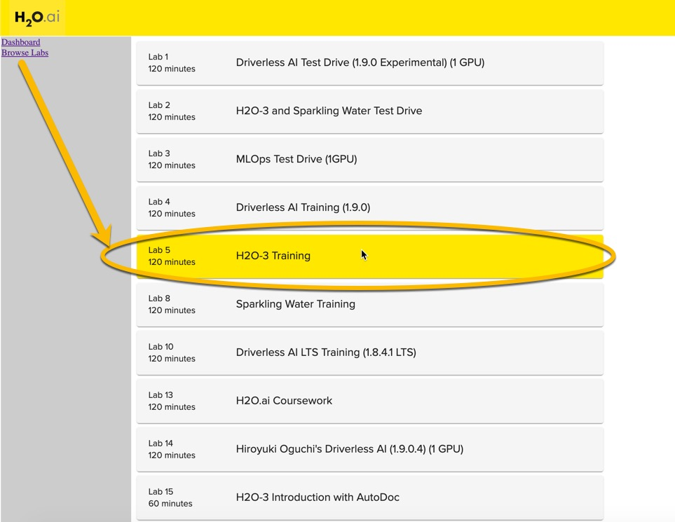
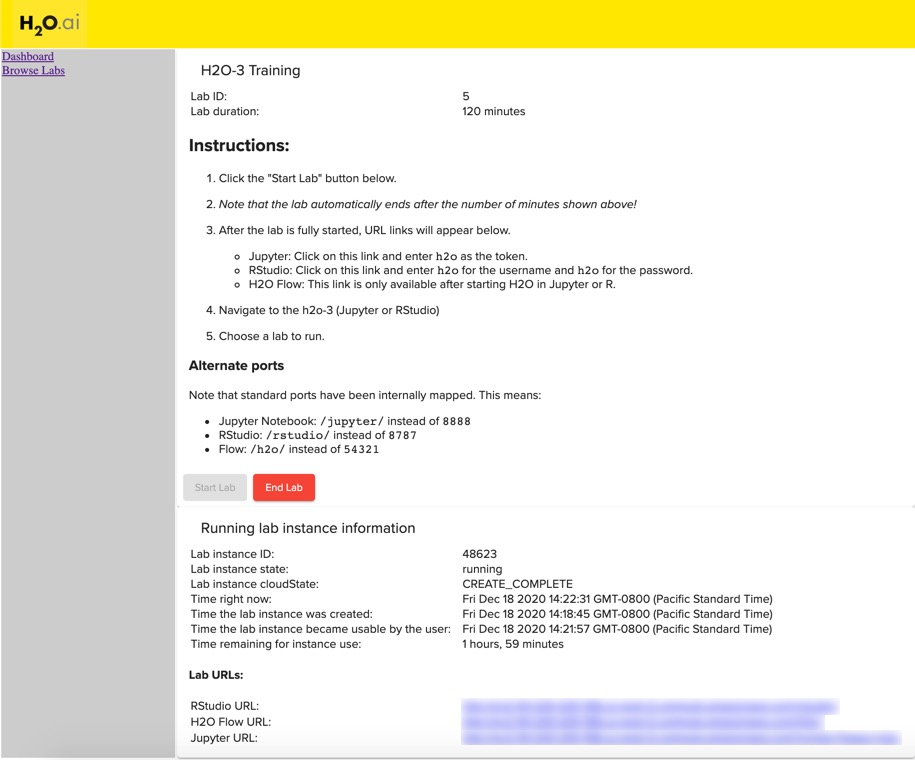
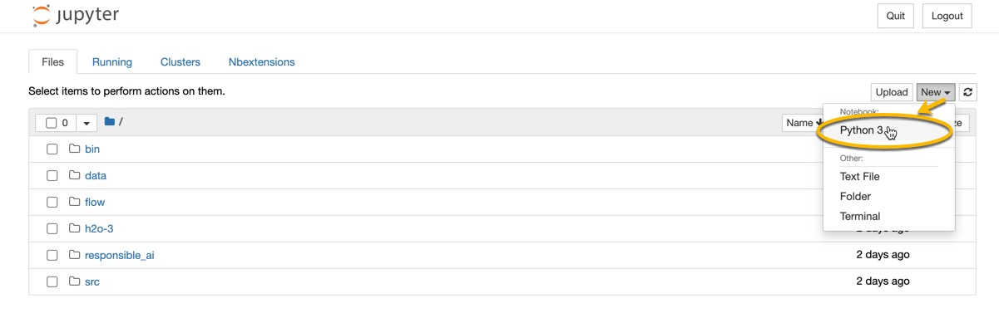

Objective
This is Part 1 of a 2-part exercise examining feature engineering using two different H2O.ai's products: the open source machine learning platform, H2O-3 and the Enterprise automated machine learning platform, Driverless AI.
Part 1 Target Encoding in H2O-3
For Part 1 of this assignment, you will create some new predictors/features for the Titanic dataset using target encoding with open-source platform, H2O-3. You will explore possible risk factors derived from this dataset that could have been considered when selling passenger insurance during this time. More specifically, we will use a baseline predictive model to determine if new predictive features increased the performance of our predictive model for whether a passenger survived.
In this overview of H2O-3, you will learn how to load data, define encoding parameters, train a target econding model, train a tree-based model with target encoding and a baseline model, and compare the results.
Note: This tutorial has been built on Aquarium, which is H2O.ai's cloud environment providing software access for workshops, conferences, and training. The labs in Aquarium have datasets, experiments, projects, and other content preloaded. If you use your version of H2O-3 or Driverless AI, you will not see preloaded content.
Prerequisites
- Basic knowledge of Machine Learning and Statistics
- An Aquarium Account to access H2O.ai's software on the AWS Cloud.
- Need an Aquarium account? Follow the instructions in the next section Task 1 Create An Account & Log Into Aquarium to create an account
- Already have an Aquarium account? Log in and continue to Task 2: Launch the H2O-3 Training Lab to begin your exercise!
Note: Aquarium's Driverless AI lab has a license key built-in, so you don't need to request one to use it. Each Driverless AI lab instance will be available to you for two hours, after which it will terminate. No work will be saved. If you need more time to further explore Driverless AI, you can always launch another lab instance or reach out to our sales team via the contact us form.
Task 1: Create An Account & Log Into Aquarium
Navigate to the following site: https://aquarium.h2o.ai/login and do the following:
- create a new account (if you don't have one)
- log into the site with your credentials

Task 2: Launch the H2O-3 Training Lab
Once you've created your account on Aquarium and/or logged into the site, click on Browse Labs and navigate to Lab 5: H2O-3 Training

Click "Start Lab".
Note: This step may take a few minutes for the AWS instance to be created and ready to access.

Once the lab has been created, use the Jupyter URL link to launch the Jupyter environment. Welcome to the Juypter environment where we will create a new Python notebook for H2O-3.
Task 3: Open a New Jupyter Notebook
Open a new Jupyter Python3 Notebook by clicking New and selecting Python 3

In this notebook, you will:
- Startup an H2O Cluster
- Import necessary packages
- Import the Titanic dataset
- Perform some basic data preparation
- Create your target encoded model
- Create a baseline model
- Compare your results
Deeper Dive and Resources:
Task 4: Initialize the H2O-3 Cluster
In this section, you will use the h2o.init() method to initialize H2O. In the first cell of your notebook, you will:
- Import the h2o python library
- Initialize the H2O cluster.
- Import the Target Encoding and GBM Models
You can enter the following in the first cell:
import h2o
h2o.init()
from h2o.estimators import H2OTargetEncoderEstimator
from h2o.estimators.gbm import H2OGradientBoostingEstimator
Your notebook should look like this:

Then Run the cell to get started

Deeper Dive and Resources:
Task 5: Import the Titanic Dataset and Select The Target Column
Now that your H2O cluster has started, you can import your data. We will import the Titanic dataset from a public AWS S3 bucket using the h2o.import_file() function.
- Enter the following in the next available cell and run it to bring in the Titanic data:
#Import the titanic dataset
titanic = h2o.import_file("https://s3.amazonaws.com/h2o-public-test-data/smalldata/gbm_test/titanic.csv")
Note: The line with the # is a code comment. These can be useful to describe what you are doing in a given section of code.
- Next we will set our target/response variable so that H2O-3 recognizes the problem as a classification problem. H2O algorithms will treat a problem as a classification problem if the column type is factor and a regression problem if the column type is numeric. You can force H2O to use either classification or regression by changing the column type.
We will select survived as our target and ensure we are doing classification by using .asfactor().
Enter the following code in a new cell and run it to create the appropriate target in a new cell:
# Set response column as a factor
titanic['survived'] = titanic['survived'].asfactor()
response='survived'
- Now you will split your data into a training and testing dataset that will be used in the modeling process. In this example, you will direct H2O to split the data by allotting 80% of the records to the training dataset and 20% of the records to the test dataset.
Enter the following in the next cell to and run it to create your train and test datasets.
# Split the dataset into train and test
train, test = titanic.split_frame(ratios = [.8], seed = 1234)
Deeper Dive and Resources:
- Importing Data in H2O-3
- Changing the Column Type in H2O-3
- Splitting Dataset Into Train/Test/Validation
Task 6: Define Encoding Parameters
Now you will begin to define your parameters needed for encoding.
In this example, we will be trying to predict survived using the popular Titanic dataset: One of the predictors is cabin, a categorical column with a number of unique values. To perform target encoding on cabin, we will calculate the average of home.dest and embarked per cabin. So instead of using cabin as a predictor in our model, we could use the target encoding of cabin.
- First, you will select which columns you want to encode. Enter the following code in a new cell and run it:
# Choose which columns to encode
encoded_columns = ["home.dest", "cabin", "embarked"]
- Set the encoding parameters to use in the target encoding model. Enter the following code in a new line and run it:
# Set target encoding parameters
blended_avg= True
inflection_point = 3
smoothing = 10
# In general, the less data you have the more regularization you need
noise = 0.15
The blended_avg & noise parameters are useful to help prevent overfitting. The inflection_point & smoothing parameters are necessary when blended_average is set to True and these values are by default set to 20 and 0.01 times the range of 𝑦 of random noise, respectively. In this example, you will set those parameters to different values.
- Next, you are going to define your data leakage handling strategy (also helps prevent overfitting) that will be used in your target encoding map. The following are a list of options you have to select from:
data_leakage_handling: To control data leakage, specify one of the following data leakage handling strategies:
none(Python)/None®: Do not holdout anything. Using whole frame for trainingk_fold(Python)/KFold®: Encodings for a fold are generated based on out-of-fold data.leave_one_out(Python)/LeaveOneOut®: The current row's response value is subtracted from the pre-calculated per-level frequencies.
When using the k-fold strategy you need to provide a fold column. To create a fold_column in your data you can use the kfold_column() function. In the below example you will use n_folds=5.
Enter the following code in the next cell and run the code.
# For k_fold strategy we need to provide fold column
data_leakage_handling = "k_fold"
fold_column = "kfold_column"
train[fold_column] = train.kfold_column(n_folds=5, seed=3456)
Deeper Dive and Resources:
Task 7: Train the Target Encoded Model
Now you are ready to train the target encoding model using the H2OTargetEncoderEstimator. You will define a new model titanic_te and use the encoding settings you defined in an earlier step.
Then you will train the model on the encoded columns you created earlier.
Enter the following code in a new cell and run it to train your target encoding model.
# Train a TE model
titanic_te = H2OTargetEncoderEstimator(fold_column=fold_column,
data_leakage_handling=data_leakage_handling,
blending=blended_avg,
k=inflection_point,
f=smoothing)
titanic_te.train(x=encoded_columns,
y=response,
training_frame=train)
Deeper Dive and Resources:
Task 8: Apply the Target Encodings on the Datasets and Train a Gradient Boosting Machine Model With Target Encoding
At this point, you are ready to apply the trained target encodings using .transform() to your test and training datasets. This will add those new encoded columns for ["home.dest", "cabin", "embarked"] to your datasets.
- Enter the following code in the next available cell and run it:
# New target encoded train and test sets
train_te = titanic_te.transform(frame=train, data_leakage_handling="k_fold", seed=1234, noise=noise)
test_te = titanic_te.transform(frame=test, noise=0.0)
- Next, you are going to define a Gradient Boosting Machine Model with Target Encoding. In this example, we are going to use some default settings. For more information on GBMs, click here.
Enter the following code in the next available cell and run it:
gbm_with_te=H2OGradientBoostingEstimator(max_depth=6,
min_rows=1,
fold_column=fold_column,
score_tree_interval=5,
ntrees=10000,
sample_rate=0.8,
col_sample_rate=0.8,
seed=1234,
stopping_rounds=5,
stopping_metric="auto",
stopping_tolerance=0.001,
model_id="gbm_with_te")
~~~~
3. Next, you are going to train the GBM with target encoded features.
Enter the following code in a new cell and run it:
~~~python
# Training is based on training data with early stopping based on xval performance
x_with_te = ["pclass", "sex", "age", "sibsp", "parch", "fare", "cabin_te", "embarked_te", "home.dest_te"]
gbm_with_te.train(x=x_with_te, y=response, training_frame=train_te)
- Then, you are going to retrieve your model's performance metric on data that it was not exposed to during training, the test_te dataset which will help prevent overly optimistic results. In this instance, you are going to retrieve the model's AUC using the auc_with_te variable. Enter the following code in a new cell and run it:
# To prevent overly optimistic results ( overfitting to xval metrics ) metric is computed on yet unseen test split
my_gbm_metrics = gbm_with_te.model_performance(test_te)
auc_with_te = my_gbm_metrics.auc()
- To view the AUC on your test data enter the following in a new cell and run it:
auc_with_te
Deeper Dive and Resources:
Task 9: Create a Baseline Gradient Boosting Machine Model
Now that you have trained a simple GBM with target encoded features, you can compare that model's AUC to that of a GBM trained with no target encoding.
- Train a GBM with some default parameters. Enter the below code in a new cell and run it:
# Train a GBM estimator
gbm_baseline=H2OGradientBoostingEstimator(max_depth=6,
min_rows=1,
fold_column=fold_column,
score_tree_interval=5,
ntrees=10000,
sample_rate=0.8,
col_sample_rate=0.8,
seed=1234,
stopping_rounds=5,
stopping_metric="auto",
stopping_tolerance=0.001,
model_id="gbm_baseline")
x_baseline = ["pclass", "sex", "age", "sibsp", "parch", "fare", "cabin", "embarked", "home.dest"]
gbm_baseline.train(x=x_baseline, y=response, training_frame=train)
- Obtain the performance of this baseline GBM using the unseen test dataset. Enter the following code in a new cell and run it:
# Measuring performance on a test split
gbm_baseline_metrics = gbm_baseline.model_performance(test)
auc_baseline = gbm_baseline_metrics.auc()
- To view the AUC on your test data enter the following code in a new cell and run it:
auc_baseline
Task 10: Compare the AUC of GBM with Target Encoding & the Baseline GBM
Review the AUC for your Target Encoded and Baseline GBMs. The AUC for the target encoded model should be higher than the baseline model. What this means is that your target encoded features were helpful in improving the model's performance.
Feature engineering is a very time-consuming procedure due to its repetitive nature. H2O Driverless AI employs a library of algorithms and feature transformations to automatically engineer new, more predictive features for a given dataset . Feature Engineering in Driverless AI is fully aware of missing values, and missing values are treated as information - either as a special categorical level or as a special number. Driverless AI performs feature engineering on the dataset to determine the optimal representation of the data. The top features used in the final model can be seen in the GUI. The complete list of features used in the final model is available in the Experiment Summary artifacts. The Experiment Summary also provides a list of the original features and their estimated feature importance. For example, given the features in the final Driverless AI model, we can estimate the feature importance of the original features.
Next Steps
In Part 2 of your assignment, you will leverage Driverless AI to explore the automated feature engineering techniques available.
Note: Before you end your session, you may want to download your notebook for future reference.